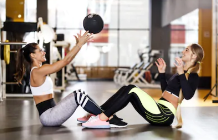

Les 7 meilleurs blogs sport en 2020 - Influentia
2021.06.16 15:35
Passer au contenu Nos solutions Fonctionnalités Plateforme d’influence : Search & Track L’agence d’influence marketing : Agency NEW ! Influentia Automated Blog Ressources Livres-blancs Nos études de cas Webinars Se Connecter Demander une démo Menu Sport & Fitness
Les 7 meilleurs blogs sport en 2020
mai 19, 2020 Accueil Sport & Fitness Les 7 meilleurs blogs sport en 2020 Que ce soit le running, le fitness ou bien le yoga, le sport est devenu un mode de vie pour beaucoup de blogueurs qui se font le plaisir de vous partager toutes leurs astuces dans leurs blogs personnels ou sur leur profil Instagram.
De plus en plus de personnes cherchent à changer leurs habitudes de vie, en y ajoutant activités physiques régulières et alimentation saine. C’est pourquoi ces influenceurs ont une influence croissante sur les réseaux.
Découvrez, avec Influentia, notre top 7 des blogs sport les plus connus.
#1. Willy @__bigwill__
Bigwill de son vrai nom Willy Trussardi est un blogueur ingénieur en nutrition du sport, mais il est également auteur d’un livre de recettes intitulé « Les recettes culte de Bigwill » .
Avec presque 400 000 abonnés sur Instagram Bigwill partage beaucoup de recettes et donne aussi des conseils sur le sport et sur la nutrition. Ce sont des passions qu’il adore partager avec ses abonnés.
Ses statistiques
Nombre d’abonnés : 403k
Nombre moyen de likes par publication : 14 809
Taux d’engagement par publication : 3,7%
Ses dernières collaborations : @willmealapp , @milkywaysblueyes
Sa base de followers : 62% de femmes et 38% d’hommes parlant en majorité français (62%) et anglais (31%)
Les centres d’intérêt de sa communauté : Sport/Health (26,2%) et Lifestyle (18,9%)
Localisation de sa communauté : Paris (19%), Lyon (5%), Lille (3%)
#2. Victoire @victoire.fit
Victoire est blogueuse mais également coach sportive fitness. C’est une jeune femme souriante qui vous aidera à vous motiver avec des programmes fitness qu’elle a conçu. Vous pourrez ainsi bénéficier de conseils sportifs pour changer votre silhouette, muscler votre corps ou même améliorer votre alimentation.
Retrouvez donc Victoire sur son blog pour une bonne séance de sport !
Ses statistiques
Nombre d’abonnés : 137k
Nombre moyen de likes par publication : 5 506
Taux d’engagement par publication : 4%
Ses dernières collaborations : @association_l214 , @gomartherapy
Sa base de followers : 63% de femmes et 37% d’hommes parlant en majorité français (59%) et anglais (34%)
Les centres d’intérêt de sa communauté : Sport/Health (35,7%) et Lifestyle (14,3%)
Localisation de sa communauté : Paris (21%), Bordeaux (4%), Lyon (3%)
#3. Alafpolak @alafpolak
Pour tous les amateurs de vélo, voici Alaphilippe, un cycliste français. Grand fan du cyclo-cross depuis sa plus tendre enfance. Ce grand sportif réalise ses premières performances dans cette discipline et reçoit même une médaille d’argent en 2010 aux championnats du monde junior. Il remportera également le tour de Californie avant sa toute première participation au tour de France.
C’est un sportif professionnel reconnu dans son domaine, n’hésitez pas à aller sur son blog pour voir ses dernières actualités !
Ses statistiques
Nombre d’abonnés : 542
Nombre moyen de likes par publication : 57 883
Taux d’engagement par publication : 10,7%
Ses dernières collaborations : @oakleybike , @lequipe , @parisnicecourse
Sa base de followers : 82,4% d’hommes et 17,6% de femmes parlant en majorité français (25,38%) et italien (8,57%)
Les centres d’intérêt de sa communauté : Sport/Health (47,99%) et Travel (13,5%)
Localisation de sa communauté : Paris (10%), Lyon (5%), Lille (2,5%)
#4. Safia @safia_ayad
Safia Ayad est une jeune femme de 28 ans qui vie à Barcelone. Elle est sportive, épanouie et aime partager son quotidien avec sa communauté. C’est à travers sa chaîne YouTube et son blog qu’elle trouvera son équilibre.
La jeune femme est également auteure d’un livre intitulé, VOY à travers lequel elle partage ses voyages et ses expériences dans le monde entier.
Ses statistiques
Nombre d’abonnés : 631k
Nombre moyen de likes par publication : 10 195
Taux d’engagement par publication : 1,6%
Ses dernières collaborations : @maison123_paris , @fondationdesfemmes , @lesfillesbarcelona
Sa base de followers : 86% de femmes et 15% d’hommes parlant majoritairement français (61%) et anglais (32%)
Les centres d’intérêt de sa communauté : Sport/Health (19,11%) et Lifestyle (17,28%)
Localisation de sa communauté : Paris (24%), Marseille (3%), Lyon (3%)
#5. Marine @marinelorphelin_off
Marine Lorphelin qui est connue pour avoir été élue miss France 2013 est une blogueuse étudiante en médecine qui en ce moment fait face au corona virus. Elle est aussi une grande passionnée de sport depuis toute petite.
En plus d’étudier la médecine en 5e année, elle est auteure d’un blog dans lequel vous pourrez découvrir son effervescence à travers des conseils sport, santé et bien-être.
Si vous êtes passionné par la médecine ou même le sport, n’hésitez pas une seconde à visiter son blog et son compte Instagram !
Ses statistiques
Nombre d’abonnés : 760k
Nombre moyen de likes par publication : 35 563
Taux d’engagement par publication : 4,7%
Ses dernières collaborations : @parismatch_magazine , @cerave_fr
Sa base de followers : 79% de femmes et 21% d’hommes parlant majoritairement Français (64%) et Anglais (27%)
Les centres d’intérêt de sa communauté : Sport/Healt (19,58%) et Travel (17,49%)
Localisation de sa communauté : Paris (20%), Lyon (3%), Bordeaux (3%)
#6. Poneyas @poneyas
Pour les fans d’équitation, ce blog va vous plaire !
Avec environ 20k abonnés et plus de 600 publications sur Instagram, Poneyas vous permettra de suivre toute l’actualité des chevaux et plus encore !
Avec ce blog sport très complet, vous pourrez en apprendre davantage sur les concours, l’élevage ou même l’achat de matériel équestre. Retrouvez tout ce que vous cherchez à ce sujet sur ce blog .
Ses statistiques
Nombre d’abonnés : 20k
Nombre moyen de likes par publication : 1 615
Taux d’engagement par publication : 7,9%
Ses dernières collaborations : @collections_penelope
Sa base de followers : 85% de femmes et 15 % d’hommes parlant majoritairement français (80%) et anglais (12%)
Les centres d’intérêt de sa communauté : Lifestyle 28,14% et Sport/Health 23,12%
Localisation de sa communauté : Paris (9%), Orléans (7%), Toulouse (3%)
#7. Agathe @agatherunsbdx
Pour tous les fans de course à pied, nous vous présentons Agathe, une Bordelaise de 29 ans qui vous fera découvrir sa passion pour la course à pied à travers son blog et son compte Instagram. Selon elle, la course à pied est un sport enrichissant qui lui a permis de mieux se connaitre. Si vous êtes aussi un ou une adepte de ce sport, allez donc faire un tour sur son blog et sur son compte Instagram, vous ne serez pas déçu !
Ses statistiques
Nombre d’abonnés : 23k
Nombre moyen de likes par publication : 447
Taux d’engagement par publication : 1,9%
Ses dernières collaborations : @oakley , @visiofactory , @chinahighlights
Sa base de followers : 65% d’hommes et 35 % de femmes parlant majoritairement français (47%) et anglais (42 %)
Les centres d’intérêt de sa communauté : Sport/Health (54,52%) et Lifestyle (9,62%)
Localisation de sa communauté : Paris (17%), Bordeaux (13%), Bayonne (3%)
Conclusion
En cette période difficile, prendre soin de soi est devenu un moyen de passer le temps et de se maintenir en forme pour beaucoup de personnes. N’hésitez pas à visiter leur blog ou leur compte Instagram pour bénéficier de leurs conseils sportif ou alimentaire !
Vous souhaitez découvrir d’autres blogs sport ?
Prenez rendez-vous avec l’un de nos experts en réseaux-sociaux !
Demandez une Démo Partagez votre amour Facebook Twitter LinkedIn Publication précédente Les meilleurs blogs lifestyle français Publication suivante Les 6 clés pour réussir sa stratégie de marketing d'influence
Vous aimerez également !
Top 10 influenceurs sport/fitness 2021
mai 12, 2021 Sport & FitnessPépites fitness / sport : découvrez ces influenceurs
novembre 20, 2019 Sport & FitnessContact
Une question sur le Marketing d'influence ? N'hésitez pas à nous contacter, l'équipe sera ravie de vous répondre ! Adresse 21, rue du Faubourg du Temple 75010 Paris Horaires 09h - 19h Phone: 01 84 60 18 46 Email: contact@influentia.frNos derniers articles
Social shopping & Influence : vendre sur les réseaux sociaux Mettre en place une stratégie d’influence marketing efficace Les meilleurs influenceurs voyage à découvrir en 2021 Les statistiques clés à vérifier pour vos influenceurs Instagram vs TikTok, quel réseau social choisir pour ma marque? Top 10 influenceurs sport/fitness 2021Nos Ressources
Blog
Nos études de cas
Webinars
Livres-blancs & infographies
Nos fonctionnalités
Search & Track
Agency
Automated
A propos d’Influentia
Nos solutions
A propos
Recrutement
Presse
Prenez le contrôle de votre marketing d’influence
Lancez-vousCopyright © 2021 Influentia.
Facebook Twitter Instagram LinkedIn TikTok Nos solutions Fonctionnalités Plateforme d’influence : Search & Track L’agence d’influence marketing : Agency NEW ! Influentia Automated Blog Ressources Livres-blancs Nos études de cas Webinars Demander une démo Se Connecter Facebook Twitter Instagram LinkedIn TikTok ← Back to login